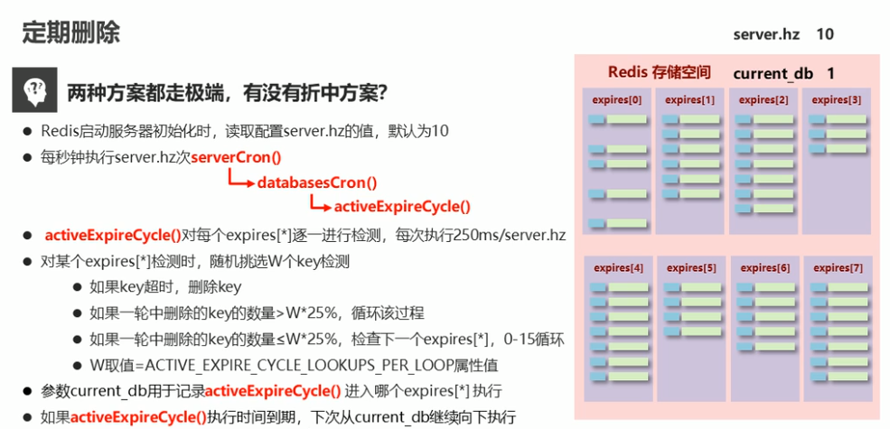

包含两个部分，一是内存空间还有剩余，但是执行DEL等删除键的操作；二是内存空间不够了，类似GC随机删除某些键。
数据删除
配置文件中的LAZY FREEING部分讲述了两种删除键的机制：
定时删除
blocking deletion即删除键时是一个阻塞操作，调用的时候就必须要进行删除，等不得，相当于时间换空间
DEL操作- 内存不够，需要阻塞删除
maxmemory 60Mb - 设置过期时间，到时间阻塞删除
expire - 更新值时，会阻塞删除旧值，比如
rename,sunionstore,set - 主从复制时，加载主机的
RDB文件时要先删除所有库的内容
惰性删除
non-blocking数据到期时并不一定马上删除，等下次访问时，先判断是否过期，未过期返回，已过期再删除，空间换时间
unlink非阻塞删除async选项，如flushdb async- 配置文件中提供配置选项
lazyfree-lazy-eviction|expire|server-del no,replica-lazy-flush no
在查询键时，首先会调用
expireIfNeeded方法1
2
3
4
5
6
7
8
9
10
11
12
13
14
15
16
17
18
19
20
21int expireIfNeeded(redisDb *db, robj *key) {
if (!keyIsExpired(db,key)) return 0;
/* If we are running in the context of a slave, instead of
* evicting the expired key from the database, we return ASAP:
* the slave key expiration is controlled by the master that will
* send us synthesized DEL operations for expired keys.
*
* Still we try to return the right information to the caller,
* that is, 0 if we think the key should be still valid, 1 if
* we think the key is expired at this time. */
if (server.masterhost != NULL) return 1; // 如果是slave的话
/* Delete the key */
server.stat_expiredkeys++; // 在master中进行删除
propagateExpire(db,key,server.lazyfree_lazy_expire);
notifyKeyspaceEvent(NOTIFY_EXPIRED,
"expired",key,db->id);
return server.lazyfree_lazy_expire ? dbAsyncDelete(db,key) : //可配置
dbSyncDelete(db,key); //的关键字
}定期删除
serverCron()是一个定期执行的函数，需要执行一系列的任务，由server.hz设定工作周期，即每秒执行server.hz次，默认是10,其完成的工作中第一项：
Active expired keys collection (it is also performed in a lazy way on lookup),具体工作在databasesCron()中进行：1
2
3
4
5
6
7
8
9
10
11
12void databasesCron(void) {
/* Expire keys by random sampling. Not required for slaves
* as master will synthesize DELs for us. */
if (server.active_expire_enabled) {
if (server.masterhost == NULL) { // 如果是master的话，执行删除
activeExpireCycle(ACTIVE_EXPIRE_CYCLE_SLOW);
} else {
expireSlaveKeys();
}
}
...
}继续到
activeExpireCycle()方法中：1
2
3
4
5
6
7
8
9
10
11
12
13
14
15
16
17
18
19
20
21
22
23
24
25
26
27
28
29
30
31
32
33
34
35
36
37
38
39
40
41
42
43
44
45
46
47
48
49
50
51
52
53
54
55
56
57
58
59
60
61
62
63
64
65
66
67
68
69
70
71
72
73
74
75
76
77
78
79
80
81
82
83
84
85
86
87
88
89
90
91
92
93
94
95
96
97
98
99
100
101
102
103
104
105
106
107void activeExpireCycle(int type) {
/* This function has some global state in order to continue the work
* incrementally across calls. */
static unsigned int current_db = 0; /* Last DB tested. */
static int timelimit_exit = 0; /* Time limit hit in previous call? */
static long long last_fast_cycle = 0; /* When last fast cycle ran. */
int j, iteration = 0;
int dbs_per_call = CRON_DBS_PER_CALL; // 默认是16
long long start = ustime(), timelimit, elapsed;
...
/* We usually should test CRON_DBS_PER_CALL per iteration, with
* two exceptions:
*
* 1) Don't test more DBs than we have.
* 2) If last time we hit the time limit, we want to scan all DBs
* in this iteration, as there is work to do in some DB and we don't want
* expired keys to use memory for too much time. */
if (dbs_per_call > server.dbnum || timelimit_exit)
dbs_per_call = server.dbnum; // 如果设置库大于16个，并且
// 检验超时了，下次循环就设为16次？
/* We can use at max ACTIVE_EXPIRE_CYCLE_SLOW_TIME_PERC percentage of CPU time
* per iteration. Since this function gets called with a frequency of
* server.hz times per second, the following is the max amount of
* microseconds we can spend in this function. */ // cpu时间的1/4
timelimit = 1000000*ACTIVE_EXPIRE_CYCLE_SLOW_TIME_PERC/server.hz/100;//250ms
timelimit_exit = 0;
if (timelimit <= 0) timelimit = 1;
if (type == ACTIVE_EXPIRE_CYCLE_FAST)
timelimit = ACTIVE_EXPIRE_CYCLE_FAST_DURATION; /* in microseconds. */
/* Accumulate some global stats as we expire keys, to have some idea
* about the number of keys that are already logically expired, but still
* existing inside the database. */
long total_sampled = 0;
long total_expired = 0;
for (j = 0; j < dbs_per_call && timelimit_exit == 0; j++) {// 遍历16次库
int expired;
redisDb *db = server.db+(current_db % server.dbnum); // 接着上次的跑
current_db++; // 记录当前的遍历到的库
/* Continue to expire if at the end of the cycle more than 25%
* of the keys were expired. */
do {
...
/* If there is nothing to expire try next DB ASAP. */
if ((num = dictSize(db->expires)) == 0) {
db->avg_ttl = 0;
break;
}
slots = dictSlots(db->expires);
now = mstime();
/* When there are less than 1% filled slots getting random
* keys is expensive, so stop here waiting for better times...
* The dictionary will be resized asap. */
if (num && slots > DICT_HT_INITIAL_SIZE &&
(num*100/slots < 1)) break; // 过期的太少了先跳过
/* The main collection cycle. Sample random keys among keys
* with an expire set, checking for expired ones. */
...
if (num > ACTIVE_EXPIRE_CYCLE_LOOKUPS_PER_LOOP)
num = ACTIVE_EXPIRE_CYCLE_LOOKUPS_PER_LOOP; //默认20
while (num--) {
dictEntry *de;
long long ttl;
// 从当前库中的expire中随机挑选一个key
if ((de = dictGetRandomKey(db->expires)) == NULL) break;
ttl = dictGetSignedIntegerVal(de)-now;
if (activeExpireCycleTryExpire(db,de,now)) expired++;//实际删除
if (ttl > 0) {
/* We want the average TTL of keys yet not expired. */
ttl_sum += ttl;
ttl_samples++;
}
total_sampled++;
}
total_expired += expired;
/* Update the average TTL stats for this database. */
...
/* We can't block forever here even if there are many keys to
* expire. So after a given amount of milliseconds return to the
* caller waiting for the other active expire cycle. */
if ((iteration & 0xf) == 0) { /* check once every 16 iterations. */
elapsed = ustime()-start;
if (elapsed > timelimit) {
timelimit_exit = 1;
server.stat_expired_time_cap_reached_count++;
break;
}
}
/* We don't repeat the cycle if there are less than 25% of keys
* found expired in the current DB. */
} while (expired > ACTIVE_EXPIRE_CYCLE_LOOKUPS_PER_LOOP/4);
}
...
}
摘自itcast

数据逐出
当内存不够时，删除哪些数据
有以下相关配置：
设置最大内存：
maxmemory <bytes>设置逐出策略：
maxmemory-policy noeviction———>默认volatile-lru -> Evict using approximated LRU among the keys with an expire set.volatile-lfu -> Evict using approximated LFU among the keys with an expire set.volatile-random -> Remove a random key among the ones with an expire set.volatile-ttl -> Remove the key with the nearest expire time (minor TTL)allkeys-lru -> Evict any key using approximated LRU.allkeys-lfu -> Evict any key using approximated LFU.allkeys-random -> Remove a random key, any key.noeviction -> Don't evict anything, just return an error on write operations.
设置抽样数目：
maxmemory-samples 5注意上述某些策略是
approximated,主要就体现在抽样数量上，不是从所有的键中进行选择
lru means least recently used：简单理解就是按时间来说，最久没有使用的
lfu means least frequently used：简单说就是按次数来说，最少使用的
说是可以通过info stats中记录的keyspace_hits:1和keyspace_misses:2来调整策略 = =。